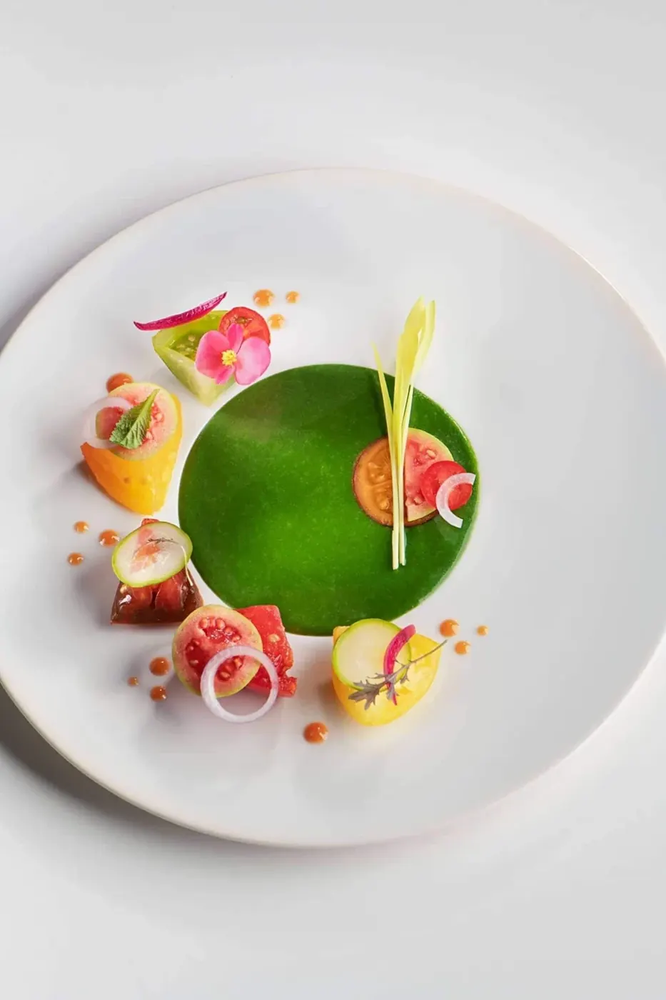
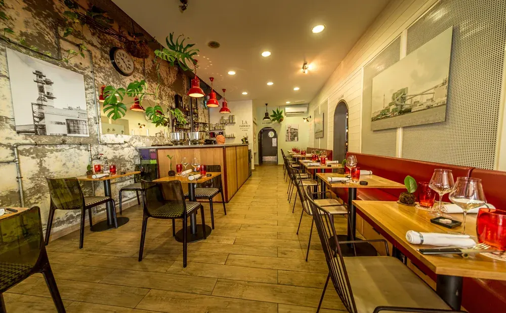
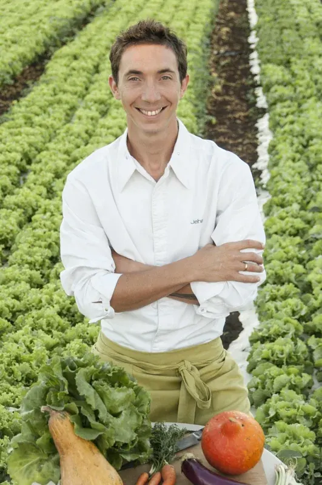
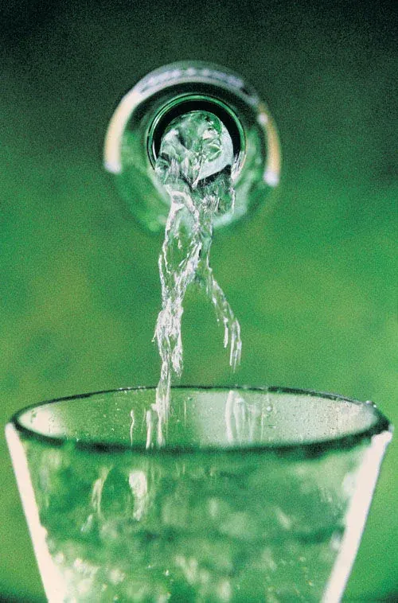
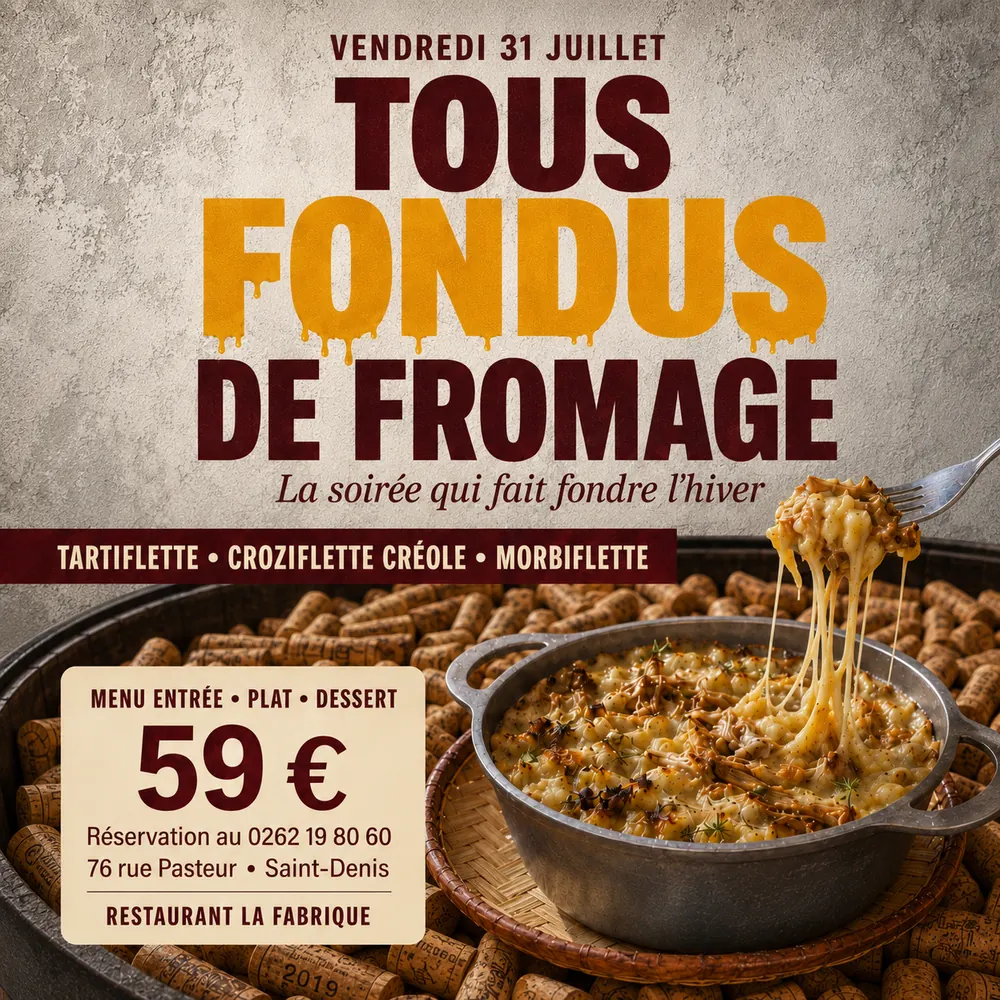

Manzé
Du mercredi au samedi, au déjeuner & au dîner. Des menus élaborés sur l'instant selon le marché et les produits de saison.
Voir la carte ManzéSaint-Denis, La Réunion
La Fabrique, c'est un restaurant 100 % local situé à Saint-Denis, La Réunion. Le Chef Jehan Colson et son équipe vous invitent à partager leur univers culinaire.
Rejoignez-nous & Régalez-vous !


Le chef
Le Chef Jehan Colson, qui a travaillé au restaurant du Palm Hotel, Le Makassar, vous accueille dans son nouveau restaurant aux saveurs réunionnaises.
La Fabrique, c'est un restaurant 100 % local situé à Saint-Denis, La Réunion.
Explorer

Du mercredi au samedi, au déjeuner & au dîner. Des menus élaborés sur l'instant selon le marché et les produits de saison.
Voir la carte Manzé
Plus de 400 références : vins naturels, bio, biodynamie, pétillants naturels ou plus classiques.
Découvrir la cave

Soirées thématiques, fêtes et menus spéciaux : retrouvez toutes les actualités de La Fabrique.
Voir les actualités
Pour vos repas d'entreprise : une gamme flexible et sur mesure, à partir de 35 € par personne.
Faire une demandeOffrez un moment à partager, valable pour un déjeuner ou un dîner.
Offrir un bon cadeau (nouvelle fenêtre)Infos pratiques
La Fabrique vous accueille du mercredi au samedi